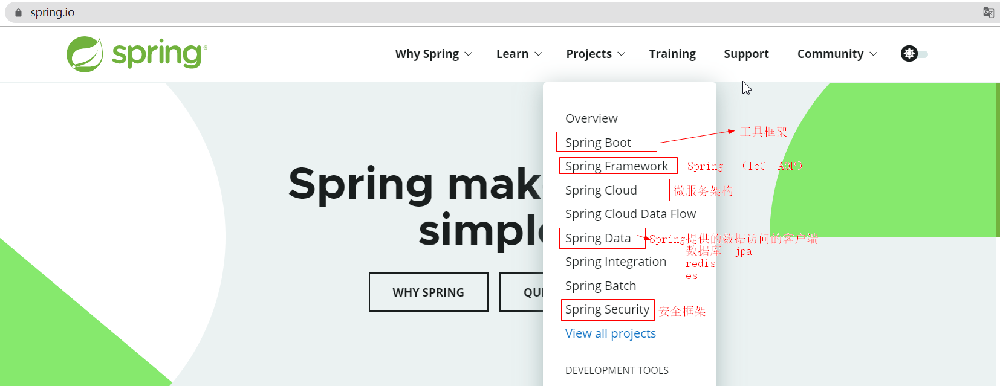
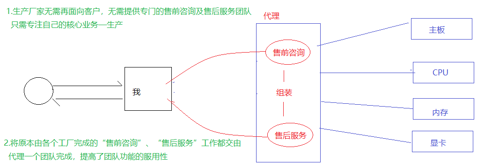

1.Spring自学笔记
一、Spring概述
1.1 web项目开发中的耦合度问题
在service实现类中需要调用DAO中的方法，也需要在servcie实现类通过new关键字创建DAO实现类对象
弊端：如果使用new关键字创建对象：
失去了面向接口编程的灵活性
代码的侵入性增强（增加了耦合度）、降低了代码的灵活性
增强项目的扩展性
1.2 面向接口编程
面向接口编程
解决方案：在Servlet中定义Service接口的对象变量，不使用new关键字创建实现类对象，在servlet的实例化的时候，通过反射动态的给Service对象变量赋值。
如何实现：Spring可以做到！！！
1.3 Spring介绍
Spring是一个轻量级的控制反转和面向切面的容器框架，用来解决企业项目开发的复杂度问题—解耦
轻量级：体积小，对代码没有侵入性
控制反转：IoC（Inverse of Control）,把创建对象的工作交由Spring完成，Spring在创建对象的时候同时可以完成对象属性赋值（DI）
面向切面：AOP（Aspect Oriented Programming）面向切面编程，可以在不改变原有业务逻辑的情况下实现对业务的增强
容器：实例的容器，管理创建的对象
1.4 Spring架构
官网 https://spring.io/

Spring架构图
1.4.1 Core Container
Spring容器组件，用于完成实例的创建和管理
core 主要包含 Spring 框架基本的核心工具类 ，Spring 的其他组件都要用到这个包里的类，Core 模块是其他组件的基本核心
beans 实例管理，包含访问配置文件、创建和管理 Bean 以及进行 IOC 操作相关的所有类
context 容器上下文，构建在 Core 和 Beans 模块基础上，提供了类似 JNDI 注册期的框架式的对象访问方法。Context 继承了 Beans 的特性，为 Spring 和行提供了大量扩展，添加了国际化，事件传播，资源加载和 Context 的透明创建的支持。ApplicationContext 接口是 Context 模块的关键
SpEL（Spring Expression Language）：提供了强大的表达式语言，用于在运行时查询和操纵对象
1.4.2 AOP、Aspects
Spring AOP组件，实现面向切面编程
aop：提供了一个符合 AOP 联盟标准的面相切面编程的实现。直接将面向切面的编程功能集成到 Spring 的框架中
aspects：提供了对 AspectJ 的集成支持
1.4.3 web
Spring web组件实际指的是SpringMVC框架，实现web项目的MVC控制
web (Spring对web项目的支持)
webmvc (SpringMVC组件)
1.4.4 Data Access
Spring数据访问组件，也是一个基于JDBC封装的持久层框架（即使没有mybatis，Spring也可以完成持久化操作）
1.4.5 Test
Spring的单元测试组件，提供了Spring环境下的单元测试支持
二、Spring IoC — 基于XML
Spring IoC 容器组件，可以完成对象的创建、对象属性赋值、对象管理
2.1 Spring框架部署（IoC）
2.1.1 创建Maven工程
2.1.2 添加SpringIoC依赖
core
beans
aop
expression
context
XML <dependency>
<groupId> org.springframework</groupId>
<artifactId> spring-context</artifactId>
<version> 5.2.25.RELEASE</version>
</dependency>
2.1.3 创建Spring配置文件
通过配置文件"告诉"Spring容器创建什么对象，给对象属性赋什么值
在resources目录下创建名为appicationContext.xml的文件（文件名是可以自定义的）
XML <?xml version="1.0" encoding="UTF-8"?>
<beans xmlns= "http://www.springframework.org/schema/beans"
xmlns:xsi= "http://www.w3.org/2001/XMLSchema-instance"
xsi:schemaLocation= "http://www.springframework.org/schema/beans
http://www.springframework.org/schema/beans/spring-beans.xsd" >
<!-- 对于一个xml文件如果作为框架的配置文件，需要遵守框架的配置规则 -->
<!-- 通常一个框架为了让开发者能够正确的配置，都会提供xml的规范文件（dtd\xsd） -->
</beans>
2.2 SpringIoC使用
使用 SpringIoC组件创建并管理对象
2.2.1 创建一个实体类
Java public class Student {
private String stuNum ;
private String stuName ;
private String stuGender ;
private int stuAge ;
private Date enterenceTime ; //入学日期
}
2.2.2 在Spring配置文件中配置实体类
XML <?xml version="1.0" encoding="UTF-8"?>
<beans xmlns= "http://www.springframework.org/schema/beans"
xmlns:xsi= "http://www.w3.org/2001/XMLSchema-instance"
xsi:schemaLocation= "http://www.springframework.org/schema/beans
http://www.springframework.org/schema/beans/spring-beans.xsd" >
<!--通过bean将实体类配置给Spring进行管理,id表示实体类的唯一表示-->
<bean id= "stu" class= "com.qfedu.ioc.bean.Student" >
<property name= "stuNum" value= "10002" />
<property name= "stuName" value= "李斯" />
<property name= "stuGender" value= "女" />
<property name= "stuAge" value= "20" />
</bean>
</beans>
2.2.3 初始化Spring对象工厂，获取对象
ClassPathXMLApplicationContext
Java //1.初始化Spring容器,加载Spring配置文件
ClassPathXmlApplicationContext context = new ClassPathXmlApplicationContext ( "applicationContext.xml" );
//2.通过Spring容器获取Student对象
Student student2 = ( Student ) context . getBean ( "stu" );
2.3 IoC和DI
IoC (Inverse of Control) 控制反转，通过Spring对象工厂完成对象的创建
DI (Dependency Injection)依赖注入，在Spring完成对象创建的同时依赖Spring容器完成对象属性的赋值
2.3.1 IoC
当我们需要通过Spring对象工厂创建某个类的对象时候，需要将这个交给Spring管理——通过bean标签配置
XML <!--通过bean将实体类配置给Spring进行管理,id表示实体类的唯一表示-->
<bean id= "stu" class= "com.qfedu.ioc.bean.Student" ></bean>
<bean id= "book" class= "com.qfedu.ioc.bean.Book" ></bean>
2.3.2 DI
通过Spring容器给创建的对象属性赋值
XML <bean id= "clazz" class= "com.qfedu.ioc.bean.Clazz" ></bean>
<!--通过bean将实体类配置给Spring进行管理,id表示实体类的唯一表示-->
<bean id= "stu" class= "com.qfedu.ioc.bean.Student" autowire= "byName" >
<property name= "stuNum" value= "10001" />
</bean>
2.4 DI依赖注入
2.4.1 依赖注入三种方式
Spring容器加载配置文件之后，通过反射创建类的对象，并给属性赋值；
Spring容器通过反射实现属性注入有三种方式：
2.4.2 set方法注入
在bean标签中通过配置property标签给属性属性赋值，实际上就是通过反射调用set方法完成属性的注入
简单类型及字符串
XML <!--通过bean将实体类配置给Spring进行管理,id表示实体类的唯一表示-->
<bean id= "stu" class= "com.qfedu.ioc.bean.Student" autowire= "byName" >
<!-- 简单类型 -->
<property name= "stuNum" value= "10001" />
<property name= "stuAge" value= "12" />
<!-- 字符串类型-->
<property name= "weight" value= "62.3" />
</bean>
日期类型
方式1：在property标签中通过ref引用Spring容器中的一个对象
XML <bean id= "date" class= "java.util.Date" ></bean>
<bean id= "stu" class= "com.qfedu.ioc.bean.Student" >
<!-- 日期类型-->
<property name= "enterenceTime" ref= "date" />
</bean>
方式2：在property标签中添加子标签bean来指定对象
XML <bean id= "stu" class= "com.qfedu.ioc.bean.Student" >
<!-- 日期类型-->
<property name= "enterenceTime" >
<bean class= "java.util.Date" />
</property>
</bean>
自定义类对象属性
XML <bean id= "cla" class= "com.qfedu.ioc.bean.Clazz" >
<property name= "classId" value= "2010" />
<property name= "className" value= "Java2010" />
</bean>
<bean id= "stu" class= "com.qfedu.ioc.bean.Student" >
<!-- 自定义对象类型-->
<property name= "clazz" ref= "cla" />
</bean>
XML <bean id= "stu" class= "com.qfedu.ioc.bean.Student" >
<!-- 自定义对象类型-->
<property name= "clazz" >
<bean class= "com.qfedu.ioc.bean.Clazz" >
<property name= "classId" value= "2010" />
<property name= "className" value= "Java2010" />
</bean>
</property>
</bean>
集合类型
List
List List中的元素是字符串或者简单类型的封装类
XML <property name= "hobbies" value= "旅游,电影" />
XML <property name= "hobbies" >
<list>
<value> 旅游</value>
<value> 电影</value>
<value> Java</value>
</list>
</property>
XML <property name= "hobbies" >
<list>
<bean class= "com.qfedu.ioc.bean.Book" />
<bean class= "com.qfedu.ioc.bean.Book" />
<bean class= "com.qfedu.ioc.bean.Book" />
<bean class= "com.qfedu.ioc.bean.Book" />
</list>
</property>
XML <property name= "hobbies" >
<list>
<ref bean= "book" ></ref> <!--引用容器中的备案-->
<ref bean= "book" ></ref>
</list>
</property>
Set
XML <property name= "sets" >
<set>
<!--和list元素注入方式相同-->
</set>
</property>
Map
XML <property name= "maps" >
<map>
<entry>
<key>
<value> k1</value>
</key>
<value> 123</value>
</entry>
<entry>
<key>
<value> k2</value>
</key>
<value> 456</value>
</entry>
</map>
</property>
Properties
XML <property name= "properties" >
<props>
<prop key= "k1" > aaa</prop>
<prop key= "k2" > bbb</prop>
</props>
</property>
2.4.3 构造器注入
简单类型、字符串、对象
Java public class Student {
private String stuNum ;
private String stuName ;
private String stuGender ;
private int stuAge ;
private double weight ;
private Date enterenceTime ; //入学日期
private Clazz clazz ;
public Student ( String stuNum , String stuName , String stuGender , int stuAge , double weight , Date enterenceTime , Clazz clazz ) {
this . stuNum = stuNum ;
this . stuName = stuName ;
this . stuGender = stuGender ;
this . stuAge = stuAge ;
this . weight = weight ;
this . enterenceTime = enterenceTime ;
this . clazz = clazz ;
}
}
XML <bean id= "date" class= "java.util.Date" ></bean>
<bean id= "stu" class= "com.qfedu.ioc.bean.Student" >
<constructor-arg index= "0" value= "10001" /> <!--字符串类型-->
<constructor-arg index= "2" value= "女" />
<constructor-arg index= "1" value= "张三" />
<constructor-arg index= "3" value= "21" /> <!--简单类型-->
<constructor-arg index= "4" value= "62.5" />
<constructor-arg index= "5" ref= "date" /> <!--对象类型-->
<constructor-arg index= "6" > <!--对象类型-->
<bean class= "com.qfedu.ioc.bean.Clazz" ></bean>
</constructor-arg>
</bean>
集合类型属性
Java public class Student {
private List < String > hobbies ;
private Set < String > sets ;
private Map < String , Object > maps ;
private Properties properties ;
public Student ( List < String > hobbies , Set < String > sets , Map < String , Object > maps , Properties properties ) {
this . hobbies = hobbies ;
this . sets = sets ;
this . maps = maps ;
this . properties = properties ;
}
}
XML <bean id= "stu1" class= "com.qfedu.ioc.bean.Student" >
<constructor-arg index= "0" >
<list>
<value> 11</value>
<value> 22</value>
<value> 33</value>
</list>
</constructor-arg>
<constructor-arg index= "1" >
<set>
<value> aa</value>
<value> bb</value>
<value> cc</value>
</set>
</constructor-arg>
<constructor-arg index= "2" >
<map>
<entry>
<key><value> key1</value></key>
<value> value1</value>
</entry>
<entry>
<key><value> key2</value></key>
<value> value2</value>
</entry>
</map>
</constructor-arg>
<constructor-arg index= "3" >
<props>
<prop key= "k1" > v1</prop>
<prop key= "k2" > v2</prop>
</props>
</constructor-arg>
</bean>
2.5 Bean的作用域
在bean标签可以通过scope属性指定对象的的作用域
scope="singleton" 表示当前bean是单例模式（默认饿汉模式，Spring容器初始化阶段就会完成此对象的创建；当在bean标签中设置 lazy-init="true"变为懒汉模式）
scope="prototype" 表示当前bean为非单例模式，每次通过Spring容器获取此bean的对象时都会创建一个新的对象
XML <bean id= "book" class= "com.qfedu.ioc.bean.Book" scope= "singleton" lazy-init= "true" ></bean>
XML <bean id= "book" class= "com.qfedu.ioc.bean.Book" scope= "prototype" ></bean>
2.6 Bean的声明周期方法
在bean标签中通过init-method属性指定当前bean的初始化方法，初始化方法在构造器执行之后执行，通过destroy-method属性指定当前bean的销毁方法，销毁方法在对象销毁之前执行
Bean类
Java public class Book {
private int bookId ;
private String bookName ;
//初始化方法：在创建当前类对象时调用的方法，进行一些资源准备工作
public void init (){
System . out . println ( "-------init" );
}
//销毁方法：在Spring容器销毁对象时调用此方法，进行一些资源回收性的操作
public void destory (){
System . out . println ( "-------destory" );
}
}
Spring配置文件
XML <bean id= "book" class= "com.qfedu.ioc.bean.Book" scope= "prototype" init-method= "init" destroy-method= "destory" ></bean>
2.7 自动装配
自动装配：Spring在实例化当前bean的时候从Spring容器中找到匹配的实例赋值给当前bean的属性
自动装配策略有两种：
byName 根据当前Bean的属性名在Spring容器中寻找匹配的对象 ，如果根据name找打了bean但是类型不匹配则抛出异常
byType 根据当前Bean的属性类型在Spring容器中寻找匹配的对象，如果根据类型找到了多个bean也会抛出异常
XML <bean id= "clazz" class= "com.qfedu.ioc.bean.Clazz" ></bean>
<bean id= "stu2" class= "com.qfedu.ioc.bean.Student" autowire= "byName" ></bean>
XML <bean id= "clazz2" class= "com.qfedu.ioc.bean.Clazz" ></bean>
<bean id= "stu2" class= "com.qfedu.ioc.bean.Student" autowire= "byType" ></bean>
2.8 SpringIoC 工作原理
三、Spring IoC — 基于注解
SpringIoc的使用，需要我们通过XML将类声明给Spring容器进行管理，从而通过Spring工厂完成对象的创建及属性值的注入；
Spring除了提供基于XML的配置方式，同时提供了基于注解的配置：直接在实体类中添加注解声明给Spring容器管理，以简化开发步骤。
3.1 Spring框架部署
3.1.1 创建Maven项目
略
3.2.2 添加SpringIoC依赖
XML <dependency>
<groupId> org.springframework</groupId>
<artifactId> spring-context</artifactId>
<version> 5.2.13.RELEASE</version>
</dependency>
3.2.3 创建Spring配置文件
因为Spring容器初始化时，只会加载applicationContext.xml文件，那么我们在实体类中添加的注解就不会被Spring扫描，所以我们需要在applicationContext.xml声明Spring的扫描范围，以达到Spring初始化时扫描带有注解的实体类并完成初始化工作
XML <?xml version="1.0" encoding="UTF-8"?>
<beans xmlns= "http://www.springframework.org/schema/beans"
xmlns:xsi= "http://www.w3.org/2001/XMLSchema-instance"
xmlns:context= "http://www.springframework.org/schema/context"
xsi:schemaLocation= "http://www.springframework.org/schema/beans
http://www.springframework.org/schema/beans/spring-beans.xsd
http://www.springframework.org/schema/context
http://www.springframework.org/schema/context/spring-context.xsd" >
<!-- 声明使用注解配置 -->
<context:annotation-config/>
<!-- 声明Spring工厂注解的扫描范围 -->
<context:component-scan base-package= "com.qfedu.beans" />
</beans>
3.2 IoC常用注解
3.2.1 @Component
类注解，声明此类被Spring容器进行管理，相当于bean标签的作用
@Component(value="stu") value属性用于指定当前bean的id，相当于bean标签的id属性；value属性也可以省略，如果省略当前类的id默认为类名首字母改小写除了@Component之外 @Service、@Controller、@Repository这三个注解也可以将类声明给Spring管理，他们主要是语义上的区别
@Controller 注解主要声明将控制器类配置给Spring管理，例如Servlet
@Service 注解主要声明业务处理类配置Spring管理，Service接口的实现类
@Repository 直接主要声明持久化类配置给Spring管理，DAO接口
@Component 除了控制器、servcie和DAO之外的类一律使用此注解声明
3.2.2 @Scope
类注解，用于声明当前类单例模式还是 非单例模式，相当于bean标签的scope属性
@Scope("prototype") 表示声明当前类为非单例模式（默认单例模式）
3.2.3 @Lazy
类注解，用于声明一个单例模式的Bean是否为懒汉模式
@Lazy(true) 表示声明为懒汉模式，默认为饿汉模式
3.2.4 @PostConstruct
方法注解，声明一个方法为当前类的初始化方法（在构造器之后执行），相当于bean标签的init-method属性
3.2.5 @PreDestroy
方法注解，声明一个方法为当前类的销毁方法（在对象从容器中释放之前执行），相当于bean标签的destory-method属性
3.2.6 @Autowired
属性注解、方法注解（set方法），声明当前属性自动装配，默认byType
3.2.7 @Resource
属性注解，也用于声明属性自动装配
默认装配方式为byName，如果根据byName没有找到对应的bean，则继续根据byType寻找对应的bean，根据byType如果依然没有找到Bean或者找到不止一个类型匹配的bean,则抛出异常。
四、代理设计模式
4.1 生活中的代理

代理设计模式的优点：将通用性的工作都交给代理对象完成，被代理对象只需专注自己的核心业务。
4.2 静态代理
静态代理，代理类只能够为特定的类生产代理对象，不能代理任意类
使用代理的好处
1.被代理类中只用关注核心业务的实现，将通用的管理型逻辑（事务管理、日志管理）和业务逻辑分离
2.将通用的代码放在代理类中实现，提供了代码的复用性
3.通过在代理类添加业务逻辑，实现对原有业务逻辑的扩展（增强）
4.3 动态代理
动态代理，几乎可以为所有的类产生代理对象
动态代理的实现方式有2种：
4.3.1 JDK动态代理
Java /***
* JDK动态代理：是通过被代理对象实现的接口产生其代理对象的
* 1.创建一个类，实现InvocationHandler接口，重写invoke方法
* 2.在类种定义一个Object类型的变量，并提供这个变量的有参构造器，用于将被代理对象传递进来
* 3.定义getProxy方法，用于创建并返回代理对象
*/
public class JDKDynamicProxy implements InvocationHandler {
//被代理对象
private Object obj ;
public JDKDynamicProxy ( Object obj ) {
this . obj = obj ;
}
//产生代理对象，返回代理对象
public Object getProxy (){
//1.获取被代理对象的类加载器
ClassLoader classLoader = obj . getClass (). getClassLoader ();
//2.获取被代理对象的类实现的接口
Class <?>[] interfaces = obj . getClass (). getInterfaces ();
//3.产生代理对象(通过被代理对象的类加载器及实现的接口)
//第一个参数：被代理对象的类加载器
//第二个参数：被代理对象实现的接口
//第三个参数：使用产生代理对象调用方法时，用于拦截方法执行的处理器
Object proxy = Proxy . newProxyInstance ( classLoader , interfaces , this );
return proxy ;
}
public Object invoke ( Object proxy , Method method , Object [] args ) throws Throwable {
begin ();
Object returnValue = method . invoke ( obj , args ); //执行method方法（insert）
commit ();
return returnValue ;
}
public void begin (){
System . out . println ( "----------开启事务" );
}
public void commit (){
System . out . println ( "----------提交事务" );
}
}
Java //创建被代理对象
BookDAOImpl bookDAO = new BookDAOImpl ();
StudentDAOImpl studentDAO = new StudentDAOImpl ();
//创建动态代理类对象，并将被代理对象传递到代理类中赋值给obj
JDKDynamicProxy jdkDynamicProxy = new JDKDynamicProxy ( studentDAO );
//proxy就是产生的代理对象:产生的代理对象可以强转成被代理对象实现的接口类型
GenaralDAO proxy = ( GenaralDAO ) jdkDynamicProxy . getProxy ();
//使用代理对象调用方法，并不会执行调用的方法，而是进入到创建代理对象时指定的InvocationHandler类种的invoke方法
//调用的方法作为一个Method参数，传递给了invoke方法
proxy . insert ( student );
4.3.2 CGLib动态代理
由于JDK动态代理是通过被代理类实现的接口来创建代理对象的，因此JDK动态代理只能代理实现了接口的类的对象。如果一个类没有实现任何接口，该如何产生代理对象呢？
CGLib动态代理，是通过创建被代理类的子类来创建代理对象的，因此即使没有实现任何接口的类也可以通过CGLib产生代理对象
CGLib动态代理不能为final类创建代理对象
XML <!-- https://mvnrepository.com/artifact/cglib/cglib -->
<dependency>
<groupId> cglib</groupId>
<artifactId> cglib</artifactId>
<version> 3.3.0</version>
</dependency>
Java /**
* 1.添加cglib依赖
* 2.创建一个类，实现MethodInterceptor接口，同时实现接口中的intercept方法
* 3.在类中定义一个Object类型的变量，并提供这个变量的有参构造器，用于传递被代理对象
* 4.定义getProxy方法创建并返回代理对象（代理对象是通过创建被代理类的子类来创建的）
*/
public class CGLibDynamicProxy implements MethodInterceptor {
private Object obj ;
public CGLibDynamicProxy ( Object obj ) {
this . obj = obj ;
}
public Object getProxy (){
Enhancer enhancer = new Enhancer ();
enhancer . setSuperclass ( obj . getClass ());
enhancer . setCallback ( this );
Object proxy = enhancer . create ();
return proxy ;
}
public Object intercept ( Object o , Method method , Object [] objects , MethodProxy methodProxy ) throws Throwable {
begin ();
Object returnValue = method . invoke ( obj , objects ); //通过反射调用被代理类的方法
commit ();
return returnValue ;
}
public void begin (){
System . out . println ( "----------开启事务" );
}
public void commit (){
System . out . println ( "----------提交事务" );
}
}
Java //创建被代理对象
BookDAOImpl bookDAO = new BookDAOImpl ();
StudentDAOImpl studentDAO = new StudentDAOImpl ();
//通过cglib动态代理类创建代理对象
CGLibDynamicProxy cgLibDynamicProxy = new CGLibDynamicProxy ( bookDAO );
//代理对象实际上是被代理对象子类，因此代理对象可直接强转为被代理类类型
BookDAOImpl proxy = ( BookDAOImpl ) cgLibDynamicProxy . getProxy ();
//使用对象调用方法，实际上并没有执行这个方法，而是执行了代理类中的intercept方法，将当前调用的方法以及方法中的参数传递到intercept方法
proxy . update ();
五、Spring AOP
5.1 AOP 概念
Aspect Oriented Programming 面向切面编程，是一种利用“横切”的技术（底层实现就是动态代理），对原有的业务逻辑进行拦截，并且可以在这个拦截的横切面上添加特定的业务逻辑，对原有的业务进行增强。
基于动态代理实现在不改变原有业务的情况下对业务逻辑进行增强
5.2 Spring AOP框架部署
5.2.1 创建Maven项目
5.2.2 添加依赖
XML <dependency>
<groupId> org.springframework</groupId>
<artifactId> spring-context</artifactId>
<version> 5.2.13.RELEASE</version>
</dependency>
<dependency>
<groupId> org.springframework</groupId>
<artifactId> spring-aspects</artifactId>
<version> 5.2.13.RELEASE</version>
</dependency>
5.2.3 创建spring配置文件
XML <?xml version="1.0" encoding="UTF-8"?>
<beans xmlns= "http://www.springframework.org/schema/beans"
xmlns:xsi= "http://www.w3.org/2001/XMLSchema-instance"
xmlns:aop= "http://www.springframework.org/schema/aop"
xsi:schemaLocation= "http://www.springframework.org/schema/beans
http://www.springframework.org/schema/beans/spring-beans.xsd
http://www.springframework.org/schema/aop
http://www.springframework.org/schema/aop/spring-aop.xsd" >
</beans>
5.3 AOP配置—基于XML
在DAO的方法添加开启事务和提交事务的逻辑
5.3.1 创建一个类，定义要添加的业务逻辑
Java public class TxManager {
public void begin (){
System . out . println ( "-----------开启事务" );
}
public void commit (){
System . out . println ( "-----------提交事务" );
}
}
5.3.2 配置aop
XML <?xml version="1.0" encoding="UTF-8"?>
<beans xmlns= "http://www.springframework.org/schema/beans"
xmlns:xsi= "http://www.w3.org/2001/XMLSchema-instance"
xmlns:aop= "http://www.springframework.org/schema/aop"
xsi:schemaLocation= "http://www.springframework.org/schema/beans
http://www.springframework.org/schema/beans/spring-beans.xsd
http://www.springframework.org/schema/aop
http://www.springframework.org/schema/aop/spring-aop.xsd" >
<bean id= "bookDAO" class= "com.qfedu.dao.BookDAOImpl" ></bean>
<bean id= "studentDAO" class= "com.qfedu.dao.StudentDAOImpl" ></bean>
<!---->
<bean id= "txManager" class= "com.qfedu.utils.TxManager" ></bean>
<aop:config>
<!--声明切入点-->
<aop:pointcut id= "book_all" expression= "execution(* com.qfedu.dao.*.*(..))" />
<!--声明txManager为切面类-->
<aop:aspect ref= "txManager" >
<!--通知-->
<aop:before method= "begin" pointcut-ref= "book_all" />
<aop:after method= "commit" pointcut-ref= "book_all" />
</aop:aspect>
</aop:config>
</beans>
AOP开发步骤：
1.创建切面类，在切面类定义切点方法
2.将切面类配置给Spring容器
3.声明切入点
4.配置AOP的通知策略
5.4 切入点的声明
5.4.1 各种切入点声明方式
XML <!--使用aop:pointcut标签声明切入点：切入点可以是一个方法-->
<aop:pointcut id= "book_insert" expression= "execution(* com.qfedu.dao.BookDAOImpl.insert())" />
<!--BookDAOImpl类中所有无参数无返回值的方法-->
<aop:pointcut id= "book_pc1" expression= "execution(void com.qfedu.dao.BookDAOImpl.*())" />
<!--BookDAOImpl类中所有无返回值的方法-->
<aop:pointcut id= "book_pc2" expression= "execution(void com.qfedu.dao.BookDAOImpl.*(..))" />
<!--BookDAOImpl类中所有无参数的方法-->
<aop:pointcut id= "book_pc3" expression= "execution(* com.qfedu.dao.BookDAOImpl.*())" />
<!--BookDAOImpl类中所有方法-->
<aop:pointcut id= "book_pc4" expression= "execution(* com.qfedu.dao.BookDAOImpl.*(..))" />
<!--dao包中所有类中的所有方法-->
<aop:pointcut id= "pc5" expression= "execution(* com.qfedu.dao.*.*(..))" />
<!--dao包中所有类中的insert方法-->
<aop:pointcut id= "pc6" expression= "execution(* com.qfedu.dao.*.insert(..))" />
<!--项目中所有类中的方法-->
<aop:pointcut id= "pc7" expression= "execution(* *(..))" />
5.4.2 AOP使用注意事项
Java //如果要使用Spring aop面向切面编程，调用切入点方法的对象必须通过Spring容器获取
//如果一个类中的方法被声明为切入点并且织入了切点之后，通过Spring容器获取该类对象，实则获取到的是一个代理对象
//如果一个类中的方法没有被声明为切入点，通过Spring容器获取的就是这个类真实创建的对象
//BookServiceImpl bookService = new BookServiceImpl();
BookServiceImpl bookService = ( BookServiceImpl ) context . getBean ( "bookServiceImpl" );
bookService . addBook ();
5.5 AOP通知策略
AOP通知策略：就是声明将切面类中的切点方法如何织入到切入点
before
after
after-throwing
after-returning
around
5.5.1 定义切面类
Java public class MyAspect {
public void method1 (){
System . out . println ( "~~~~~~~method1" );
}
public void method2 (){
System . out . println ( "~~~~~~~method2" );
}
public void method3 (){
System . out . println ( "~~~~~~~method3" );
}
public void method4 (){
System . out . println ( "~~~~~~~method4" );
}
//环绕通知的切点方法，必须准守如下的定义规则：
//1.必须带有一个ProceedingJoinPoint类型的参数
//2.必须有Object类型的返回值
//3.在前后增强的业务逻辑之间执行Object v = point.proceed();
//4.方法最后返回v
public Object method5 ( ProceedingJoinPoint point ) throws Throwable {
System . out . println ( "~~~~~~~method5---before" );
//此代码的执行，就表示切入点方法的执行
Object v = point . proceed ();
System . out . println ( "~~~~~~~method5---after" );
return v ;
}
}
5.5.2 配置切面类
XML <bean id= "myAspect" class= "com.qfedu.utils.MyAspect" ></bean>
<aop:config>
<!--使用aop:pointcut标签声明切入点：切入点可以是一个方法-->
<aop:pointcut id= "book_insert" expression= "execution(* com.qfedu.dao.BookDAOImpl.insert())" />
<aop:aspect ref= "myAspect" >
<!--aop:before 前置通知，切入到指定切入点之前-->
<aop:before method= "method1" pointcut-ref= "book_insert" />
<!--aop:after 后置通知，切入到指定切入点之后-->
<aop:after method= "method2" pointcut-ref= "book_insert" />
<!--aop:after-throwing 异常通知，切入点抛出异常之后-->
<aop:after-throwing method= "method3" pointcut-ref= "book_insert" />
<!--aop:after-returning 方法返回值返回之后，对于一个Java方法而言return返回值也是方法的一部分
因此“方法返回值返回之后”和“方法执行结束”是同一个时间点，随意after 和 after-returning根据配置
的顺序决定执行顺序-->
<aop:after-returning method= "method4" pointcut-ref= "book_insert" />
<aop:around method= "method5" pointcut-ref= "book_insert" />
</aop:aspect>
</aop:config>
六、Spring AOP 注解配置
6.1 Spring AOP 注解配置框架部署
6.1.1 创建Maven工程
6.1.2 添加Spring依赖
6.1.3 Spring配置文件
XML <?xml version="1.0" encoding="UTF-8"?>
<beans xmlns= "http://www.springframework.org/schema/beans"
xmlns:xsi= "http://www.w3.org/2001/XMLSchema-instance"
xmlns:context= "http://www.springframework.org/schema/context"
xmlns:aop= "http://www.springframework.org/schema/aop"
xsi:schemaLocation= "http://www.springframework.org/schema/beans
http://www.springframework.org/schema/beans/spring-beans.xsd
http://www.springframework.org/schema/context
http://www.springframework.org/schema/context/spring-context.xsd
http://www.springframework.org/schema/aop
http://www.springframework.org/schema/aop/spring-aop.xsd" >
<context:annotation-config></context:annotation-config>
<context:component-scan base-package= "com.qfedu" ></context:component-scan>
<!-- 基于注解配置的aop代理 -->
<aop:aspectj-autoproxy></aop:aspectj-autoproxy>
</beans>
6.2 AOP注解配置案例
Java @Component
@Aspect
public class TransactionManager {
@Pointcut ( "execution(* com.qfedu.dao.*.*(..))" )
public void pc1 (){}
@Before ( "pc1()" )
public void begin (){
System . out . println ( "~~~~开启事务" );
}
@After ( "pc1()" )
public void commit (){
System . out . println ( "~~~~提交事务" );
}
@Around ( "pc1()" )
public Object printExecuteTime ( ProceedingJoinPoint point ) throws Throwable {
long time1 = System . currentTimeMillis ();
Object v = point . proceed ();
long time2 = System . currentTimeMillis ();
System . out . println ( "----time:" + ( time2 - time1 ));
return v ;
}
}
注意：注解使用虽然方便，但是只能在源码上添加注解，因此我们的自定义类提倡使用注解配置；但如果如果使用到第三方提供的类则需要通过xml配置形式完成配置。
七、Spring整合MyBatis
Spring两大核心思想：IoC 和 AOP
IoC : 控制反转，Spring容器可以完成对象的创建、属性注入、对象管理等工作
AOP : 面向切面，在不修改原有业务逻辑的情况下，实现原有业务的增强
7.1 Spring可以对MyBatis提供哪些支持？
IoC支持 SpringIoC 可以为MyBatis完成DataSource、SqlSessionFactory、SqlSession以及DAO对象的创建
AOP支持 使用Spring提供的事务管理切面类完成对MyBatis数据库操作中的事务管理
7.2 Spring整合MyBatis准备工作
7.2.1 创建Maven工程
7.2.2 部署MyBatis框架
XML <!-- https://mvnrepository.com/artifact/mysql/mysql-connector-java -->
<dependency>
<groupId> mysql</groupId>
<artifactId> mysql-connector-java</artifactId>
<version> 5.1.47</version>
</dependency>
<!-- https://mvnrepository.com/artifact/org.mybatis/mybatis -->
<dependency>
<groupId> org.mybatis</groupId>
<artifactId> mybatis</artifactId>
<version> 3.4.6</version>
</dependency>
创建MyBatis配置文件(创建配置文件之后无需进行任何配置)
XML <?xml version="1.0" encoding="UTF-8" ?>
<!DOCTYPE configuration PUBLIC "-//mybatis.org//DTD Config 3.0//EN"
"http://mybatis.org/dtd/mybatis-3-config.dtd">
<configuration>
</configuration>
7.2.3 部署Spring框架
XML <dependency>
<groupId> org.springframework</groupId>
<artifactId> spring-context</artifactId>
<version> 5.2.13.RELEASE</version>
</dependency>
<dependency>
<groupId> org.springframework</groupId>
<artifactId> spring-aspects</artifactId>
<version> 5.2.13.RELEASE</version>
</dependency>
<dependency>
<groupId> org.springframework</groupId>
<artifactId> spring-jdbc</artifactId>
<version> 5.2.13.RELEASE</version>
</dependency>
创建Spring配置文件：applicationContext.xml
XML <?xml version="1.0" encoding="UTF-8"?>
<beans xmlns= "http://www.springframework.org/schema/beans"
xmlns:xsi= "http://www.w3.org/2001/XMLSchema-instance"
xmlns:context= "http://www.springframework.org/schema/context"
xmlns:aop= "http://www.springframework.org/schema/aop"
xsi:schemaLocation= "http://www.springframework.org/schema/beans
http://www.springframework.org/schema/beans/spring-beans.xsd
http://www.springframework.org/schema/context
http://www.springframework.org/schema/context/spring-context.xsd
http://www.springframework.org/schema/aop
http://www.springframework.org/schema/aop/spring-aop.xsd" >
</beans>
7.2.4 添加Spring整合MyBatis的依赖
mybatis-spring 就是mybatis提供的兼容Spring的补丁
XML <!-- https://mvnrepository.com/artifact/org.mybatis/mybatis-spring -->
<dependency>
<groupId> org.mybatis</groupId>
<artifactId> mybatis-spring</artifactId>
<version> 1.3.2</version>
</dependency>
7.3 Spring整合MyBatis整合IoC配置
7.3.1 整合Druid连接池
XML <dependency>
<groupId> com.alibaba</groupId>
<artifactId> druid</artifactId>
<version> 1.1.10</version>
</dependency>
Properties druid.driver = com.mysql.jdbc.Driver
druid.url = jdbc:mysql://localhost:3306/db_2010_mybatis?characterEncoding=utf-8
druid.username = root
druid.password = admin123
## 连接池参数
druid.pool.init = 1
druid.pool.minIdle = 3
druid.pool.maxActive = 20
druid.pool.timeout = 30000
在applicationContext.xml中配置DruidDataSource
XML <!--加载druid.properties属性文件-->
<context:property-placeholder location= "classpath:druid.properties" />
<!--依赖Spring容器完成数据源DataSource的创建-->
<bean id= "druidDataSource" class= "com.alibaba.druid.pool.DruidDataSource" >
<property name= "driverClassName" value= "${druid.driver}" />
<property name= "url" value= "${druid.url}" />
<property name= "username" value= "${druid.username}" />
<property name= "password" value= "${druid.password}" />
<property name= "initialSize" value= "${druid.pool.init}" />
<property name= "minIdle" value= "${druid.pool.minIdle}" />
<property name= "maxActive" value= "${druid.pool.maxActive}" />
<property name= "maxWait" value= "${druid.pool.timeout}" />
</bean>
7.3.2 整合MyBatis—创建SqlSessionFactory
依赖Spring容器创建MyBatis的SqlSessionFactory对象
XML <!--依赖Spring容器完成MyBatis的SqlSessionFactory对象的创建-->
<bean id= "sqlSessionFactory" class= "org.mybatis.spring.SqlSessionFactoryBean" >
<!--配置数据源-->
<property name= "dataSource" ref= "druidDataSource" />
<!--配置mapper文件的路径-->
<property name= "mapperLocations" value= "classpath:mappers/*Mapper.xml" />
<!--配置需要定义别名的实体类的包-->
<property name= "typeAliasesPackage" value= "com.qfedu.pojo" />
<!--可选：配置MyBatis的主配置文件-->
<property name= "configLocation" value= "classpath:mybatis-config.xml" />
</bean>
7.3.3 整合MyBatis-创建Mapper
XML <!--加载dao包中的所有DAO接口，通过sqlSessionFactory获取SqlSession，然后创建所有的DAO接口对象，存储在Spring容器-->
<bean class= "org.mybatis.spring.mapper.MapperScannerConfigurer" >
<property name= "sqlSessionFactoryBeanName" value= "sqlSessionFactory" />
<property name= "basePackage" value= "com.qfedu.dao" />
</bean>
7.4 Spring整合MyBatis整合AOP配置
使用Spring提供的事务管理切面类 完成DAO中增删改操作的事务管理
7.4.1 事务的隔离级别
isolation 设置事务隔离级别：READ_UNCOMMITTED ,READ_COMMITTED , REPEATABLE_READ , SERIALIZABLE
不可重复度（虚读）: 在同一个事务中，两次查询操作读取到数据不一致
例如：T2进行第一次查询之后在第二次查询之前，T1修改并提交了数据，T2进行第二次查询时读取到的数据和第一次查询读取到数据不一致。
7.4.2 事务的传播机制
propagation 设置事务的传播机制
REQUIRED 如果上层方法没有事务，则创建一个新的事务；如果已经存在事务，则加入到事务中。
SUPPORTS 如果上层方法没有事务，则以非事务方式执行；如果已经存在事务，则加入到事务中。
REQUIRES_NEW 如果上层方法没有事务，则创建一个新的事务；如果已经存在事务，则将当前事务挂起。
NOT_SUPPORTED 如果上层方法没有事务，则以非事务方式执行；如果已经存在事务，则将当前事务挂起。
NEVER 如果上层方法没有事务，则以非事务方式执行；如果已经存在事务，则抛出异常。
MANDATORY 如果上层方法已经存在事务，则加入到事务中执行；如果不存在事务则抛出异常。
NESTED 如果上层方法没有事务，则创建一个新的事务；如果已经存在事务，则嵌套到当前事务中。
7.4.3 Spring AOP事务管理配置—XML配置
XML <!--1.将Spring提供的事务管理配置配置给Spring容器-->
<bean id= "transactionManager" class= "org.springframework.jdbc.datasource.DataSourceTransactionManager" >
<property name= "dataSource" ref= "druidDataSource" />
</bean>
<!--2.通过Spring jdbc提供的 tx标签，声明事务管理策略-->
<tx:advice id= "txAdvice" transaction-manager= "transactionManager" >
<tx:attributes>
<tx:method name= "insert*" isolation= "REPEATABLE_READ" propagation= "REQUIRED" />
<tx:method name= "delete*" isolation= "REPEATABLE_READ" propagation= "REQUIRED" />
<tx:method name= "update*" isolation= "REPEATABLE_READ" propagation= "REQUIRED" />
<tx:method name= "query*" isolation= "REPEATABLE_READ" propagation= "SUPPORTS" />
</tx:attributes>
</tx:advice>
<!--3.将事务管理策略以AOP配置 应用于DAO操作方法-->
<aop:config>
<aop:pointcut id= "crud" expression= "execution(* com.qfedu.service.*.*(..))" />
<aop:advisor advice-ref= "txAdvice" pointcut-ref= "crud" />
</aop:config>
7.4.4 Spring AOP事务管理配置—注解配置
在applicationContext.xml中配置事务管理，声明使用注解方式进行事务配置
XML <!--使用注解进行事务管理前提是 IoC需要进行注解配置-->
<context:annotation-config/>
<context:component-scan base-package= "com.qfedu" />
<!--1.将Spring提供的事务管理配置配置给Spring容器-->
<bean id= "transactionManager" class= "org.springframework.jdbc.datasource.DataSourceTransactionManager" >
<property name= "dataSource" ref= "druidDataSource" />
</bean>
<!--2.声明使用注解完成事务配置-->
<tx:annotation-driven transaction-manager= "transactionManager" />
在需要Spring进行事务管理的方法上添加@Transactional注解
Java @Transactional ( isolation = Isolation . REPEATABLE_READ , propagation = Propagation . SUPPORTS )
public List < User > listUsers () {
return userDAO . queryUsers ();
}
八、基于Spring的单元测试
如果想要使用Spring容器实现属性注入、实现AOP面向切面编程，对象必须通过Spring容器获取；为了便于Spring环境下的测试，Spring提供了test组件，专门针对Spring环境进行单元测试。
8.1 添加依赖
XML <dependency>
<groupId> junit</groupId>
<artifactId> junit</artifactId>
<version> 4.12</version>
<scope> test</scope>
</dependency>
<dependency>
<groupId> org.springframework</groupId>
<artifactId> spring-test</artifactId>
<version> 5.2.13.RELEASE</version>
</dependency>
8.2 编写单元测试类
8.2.1 创建一个单元测试类
略
8.2.2 添加注解
Java //1.通过@RunWith 声明当前测试类位于Spring容器环境（被Spring容器管理）
@RunWith ( SpringJUnit4ClassRunner . class )
//2.通过@ContextConfiguration 声明当前测试环境的Spring容器运行时加载的配置文件
@ContextConfiguration ( "classpath:applicationContext.xml" )
public class UserServiceImplTest {
//因为当前测试类是基于Spring容器运行的，当前测试类的对象是通过Spring容器创建的
//因此可以通过Spring容器实现属性的注入
@Resource
private UserService userServiceImpl2 ;
@Resource
private UserService userServiceImpl ;
@Test
public void test (){
List < User > users = userServiceImpl . listUsers ();
System . out . println ( users );
}
}